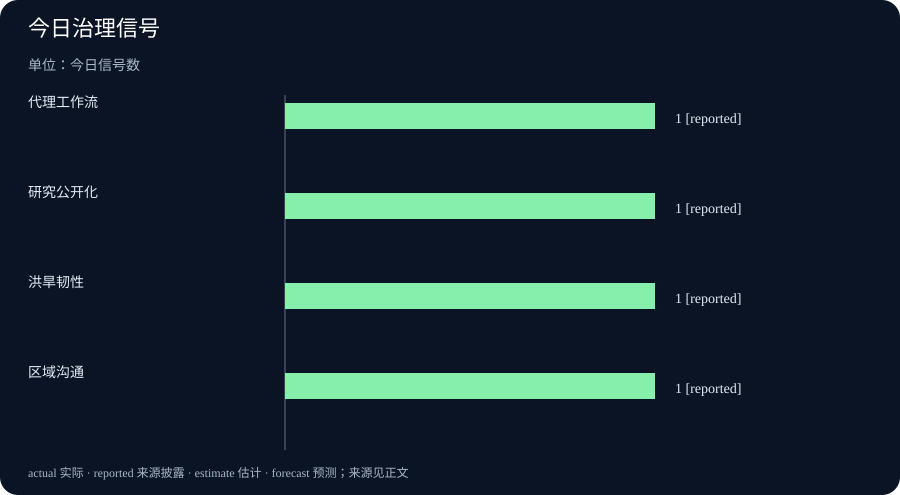

Daily Intelligence｜规则开始进入基础设施
2026-10-12｜Asia/Shanghai｜早间版。检索锚点为 2026-10-12 06:58:31+08:00，回看此前 24 小时。公开页面能确认 10 月 11 日的日期，但并非全部提供小时；文中把精确时间、日期可见但小时未披露、以及背景材料分开处理。
Today’s Thesis｜今天的判断
10 月 11 日的新增信号集中在“把能力写进制度和公共系统”：OpenAI Academy把代理式工作讲给新闻机构，OpenAI社区出现内部数学成果发布讨论，英国政府启动洪旱韧性工作组，中国发布中越高层会见消息。它们属于不同领域，不能拼成一条单一趋势，但共同提醒我们：AI与基础设施的价值，最终要由组织流程、公共预算和可追责的执行结果来证明。
Executive Summary｜先看三条变化
- 代理产品进入工作方法讨论：OpenAI Academy在 10 月 11 日发布新闻机构 ChatGPT Work 回放，强调代理、技能和插件如何推动多步骤任务。页面没有提供独立准确率或成本评估，仍应视为产品教育材料。OpenAI Academy
- AI研究的公开边界在扩大：OpenAI开发者社区 10 月 11 日出现“First look at mathematics manuscripts from an internal frontier model”公告，讨论公开数学手稿及其独立咨询机制。社区帖是机构公开沟通，不等于论文已完成同行评审。OpenAI开发者社区
- 气候适应从倡议转向治理安排：英国环境、食品与农村事务部 10 月 11 日宣布洪旱韧性工作组，并披露 2024—2036 年至少 105 亿英镑防洪投入。工作组和预算承诺仍需通过项目交付、风险降低和地方参与来验证。英国政府
AI Daily｜AI 与产品
OpenAI Academy的新闻机构回放把代理式产品的价值描述为“从回答问题转向跨多个步骤推动工作”。这类材料的意义在于它把模型能力放回编辑部流程：研究、分析、规划、插件调用和团队协作必须连成可审计链条。它没有公布采用后的错误率、节省时间或退稿率，因此不能把演示当成生产力结果。活动页面
对新闻机构而言，代理工作流至少需要四类控制：第一，来源和检索路径可回放；第二，访问外部系统的权限按任务最小化；第三，发布前有人工确认与撤回入口；第四，出现错误时能定位是模型、工具、数据还是编辑判断。没有这些控制，多步骤只是把未经核验的文本更快地推向下游。
OpenAI开发者社区 10 月 11 日的“数学手稿”公告则代表另一条路线：让内部模型产出的研究材料先进入公开讨论，再接受外部质询。公开手稿有助于让研究过程可见，但“发布”与“证明成立”之间仍有距离。读者应区分模型生成的猜想、形式化证明、独立复核和最终论文版本。OpenAI开发者社区公告
OpenAI Forum同日发布一场面向小企业的活动回放，讨论 AI 如何在规划、客户服务与重复流程中扩大企业能力。它是案例和教育内容，不能替代企业自己的收入、成本与留存数据。OpenAI Forum
两条信号放在一起，说明 AI 产品和研究都在争取更长的信任链。产品侧需要任务日志和权限边界，研究侧需要可复现材料、审稿与反例。仅凭界面流畅或标题宏大，都不能替代可重复的证据。
Business Daily｜商业与产业
代理产品的商业化不只取决于模型价格。新闻机构购买的可能是检索、协作、版本控制和发布接口的组合，实际成本还包括培训、权限配置、审计、误报处理和人工接管。若供应商只报告调用量或演示案例，采购方仍无法判断是否降低了每篇稿件的总成本。
AI研究公开化也会改变企业的研发流程。公开手稿能够吸引外部复核者、潜在合作伙伴和人才，但同时增加了知识产权、数据来源和责任披露成本。企业需要明确哪些材料可公开、哪些结果仍属内部假设，以及模型参与的比例如何记录。
英国洪旱韧性工作组把另一种“AI与产业”边界摆到台面上：气候风险需要长期资本、地方数据和公共工程共同承担。英国政府称 2024—2036 年至少投入 105 亿英镑防洪，且工作组要加强监督并听取社区声音。预算数字是投入承诺，不能直接写成已减少损失。英国政府新闻稿
从商业视角，防洪和抗旱投资会影响保险定价、基础设施运营、地方土地开发和农业安排。项目成效至少要看受保护资产、预警提前量、维修周期、保险理赔和居民参与。若只看工程开工数，会忽略维护和极端事件下的实际韧性。
Macro Observation｜宏观观察
中国驻外使领馆 10 月 11 日刊发王沪宁会见越南国会主席陈青敏的消息，重申高层战略沟通和经贸、社会交流方向。该页面的公开时间为 20:10，属于外交信息披露，不等于新的贸易协议或投资落地。中国驻洛杉矶总领馆
把这条消息与英国洪旱治理放在同一期，能看到宏观判断的两种证据：外交沟通提供政策方向，基础设施预算提供资源承诺。两者都还要经过项目、合同、贸易和公共服务数据的验证。日报不把会见写成关系已经改善，也不把预算写成风险已经下降。
中国交通运输部发布的长江气象预告给出了 10 月 11 日 11:00 的观测窗口和未来 24 小时天气预报。它是运营性信息而非宏观增长数据，却提醒市场：极端天气对航运、港口能见度和物流排班的影响，需要与基础设施投资和保险成本一起看。交通运输部
Signal Dashboard｜信号仪表盘
| 信号 | 今日事实 | 边界 |
|---|---|---|
| 代理工作流 | OpenAI Academy介绍多步骤任务方法 | 产品教育材料，不是独立效果评估 |
| 研究公开化 | OpenAI社区出现数学手稿发布讨论 | 公告不等于同行评审结论 |
| 气候韧性 | 英国宣布洪旱韧性工作组与长期投入 | 预算承诺不等于风险已下降 |
| 区域沟通 | 中越高层会见消息公开 | 沟通不等于新协议或贸易增量 |
Deep Insight｜深度观察
真正的“落地”是可追责的闭环
过去几天的 AI 新闻容易被模型名称、价格和演示吸引，10 月 11 日的信号更适合换一个问题：谁能在系统失败时说明发生了什么。代理进入新闻机构，最小闭环不是“写出一段摘要”，而是从来源选择、检索时间、工具调用到编辑批准都留下记录。只要有一步无法回放，组织就很难分辨错误来自网页、插件、提示词还是模型。
数学手稿公开也有相同结构。模型提出的结果可能很快，但研究共同体需要知道数据和代码是否可得、证明能否由独立团队复现、哪些结论仍是猜想。公开不是终点，而是把验证责任从单一实验室扩展到更大的审查网络。对企业来说，开放研究可以吸引合作；对投资者来说，必须等待复核后的可重复成果。
洪旱韧性工作组则把“闭环”从数字系统延伸到公共治理。英国政府披露的 105 亿英镑投入，为工程和监督提供了资源边界；但社区参与、土地规划、排水维护、预警覆盖和保险机制决定了项目能否真正降低损失。一次洪水后的理赔额、道路恢复时间和居民转移效率，往往比开工仪式更能说明韧性。
中越会见与长江气象预告同样说明，宏观判断不能只依赖高层叙事。外交沟通的后续是贸易、投资、口岸与企业订单；天气预报的后续是船期、吞吐量、库存和运输价格。把这些中间变量记录下来，才能避免把一次政策表态直接推导成增长或风险结论。
因此，日报的“当天性”不应只靠时间戳，还要靠证据层级和后续指标。每条新闻都应回答：何时公开、说了什么、没有说什么、下一步由谁验证。这样才能防止连续几期只是重复同一旧事件的标题。
这套方法也能改善跨期比较。若今天写代理工作流，明天就不应把同一场活动换一个标题再写一次，而应寻找新的采用数据、错误案例或产品更新。若今天写洪旱预算，后续期次应追踪合同、施工、维护和实际损失，而不是把同一预算数字再次当作新事实。这样，日报的相似度来自持续验证同一问题，而不是来源重复。
Tomorrow Watch｜明日值得追踪
- 代理产品是否公开新闻机构实际采用后的准确率、人工接管率和单位任务成本。
- 数学手稿是否提供可下载材料、独立复核安排和从猜想到定理的状态标记。
- 英国洪旱工作组的成员、地方参与机制和首批项目指标。
- 中越会见之后是否出现具体经贸、交通或产业合作文件。
- 长江天气预警是否影响港口作业、船期和相关物流价格。
One Chart｜一张图
本期图表只统计 10 月 11 日官方页面明确披露的四类治理信号，每类计数为 1，不代表预算规模、风险概率或商业价值。

Quote of the Day｜今日引用
“How can ChatGPT help move the business of news forward?”
— OpenAI Academy，面向新闻机构的 ChatGPT Work 活动介绍。出处
中文：ChatGPT 如何帮助新闻业务向前推进？这是活动页面提出的引导问题，不是对新闻机构已经获得收益的实证判断。
Action Items｜今天值得思考什么
- 代理的验收指标是什么？ 把准确率、人工接管、来源完整性、耗时和单位任务成本写进试点协议。
- 研究结论到哪一步？ 为模型手稿分别标注猜想、形式化证明、独立复核和正式发表状态。
- 预算如何变成韧性？ 跟踪防洪防旱项目的受保护资产、预警提前量、维护周期和实际损失变化。
- 外交沟通带来什么结果？ 观察会见后的贸易、投资、口岸和企业合同文件，避免用会见本身代替结果。
- 天气如何传导到运营？ 将预警与港口作业、船期、库存和物流价格的变化做时间对照。
信息边界
本报告以 2026-10-12 06:58:31+08:00 为编写锚点。AI来源与英国政府、驻外使领馆、交通运输部页面均为 10 月 11 日公开或更新的官方页面；部分页面没有披露小时，文中明确按日期使用。产品说明、社区公告、外交会见、预算承诺和天气预报属于不同证据层级，均未被写成已实现的生产率、科研结论或宏观结果。